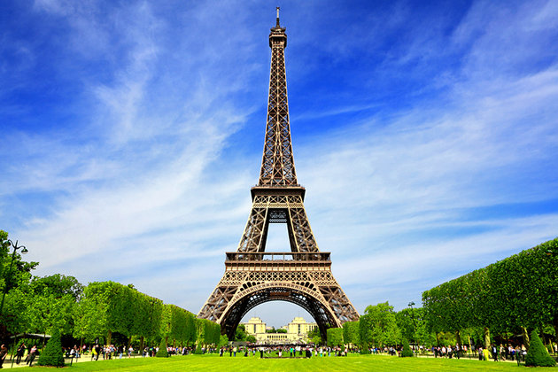
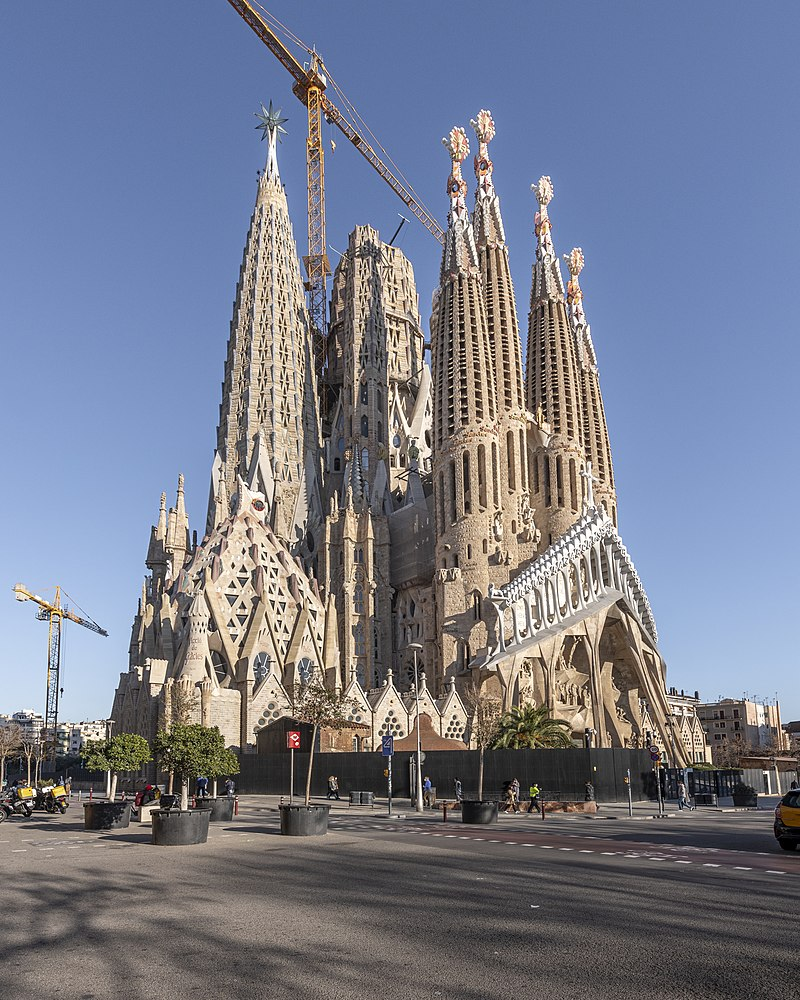

Vietos kurias norėčiau pamatyti
| Pavadinimas | Šalis | Paveiksliukas | Nuoroda | |
|---|---|---|---|---|
| 1 | Maču piču | Peru | Nuoroda | |
| 2 | Paryžius | Prancuzija |  | Nuoroda |
| 3 | Tokijas | Japonija | Nuoroda | |
| 4 | Sagrada Família | Barselona |  | Nuoroda |
| 5 | Taj Mahal | Indija |

| Nuoroda |